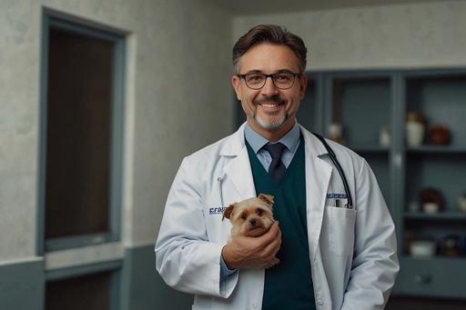
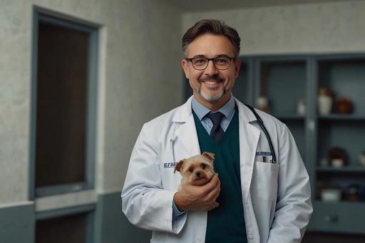
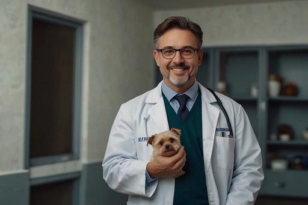
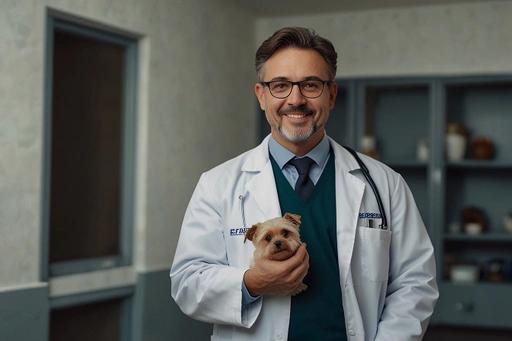

Aqui na Localiza Pet você encontra veterinários Gratuitos proximo de você!
 



Consultas de rotina e check-up geral para garantir que seu bichinho fique saudável
em qualquer idade ou tamanho, sem o estresse causado nos pets durante visitas a consultórios veterinários.
Examinação de cães e gatos para atestar se estão aptos para serem imunizados por vacinas contra raiva,
gripe e outras doenças que podem comprometer a saúde de seu pet.
Contamos com diferentes tipos de cirurgia que só ocorrerão após a examinação em sua própria casa.
O seu bichinho será observado em nossa unidade física, no caso de cirurgias serem necessárias.